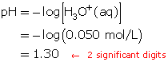
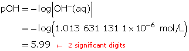
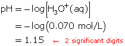
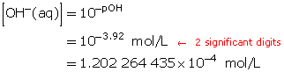
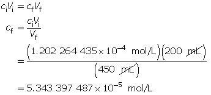
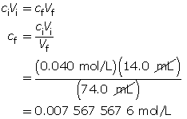
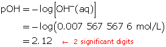
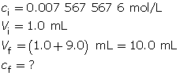

Module 5—Acids and Bases
 Read
Read
Predicting pH of Diluted Solutions

In the previous module you performed a dilution and calculated the resulting concentration of solute in the diluted solution. In your studies you learned that the algorithm to calculate the concentration of the dilute solution depends upon the concentration of solute in the original solution, the volume of original solution taken, and the final volume of the diluted solution.
Earlier in this module you learned that acids react with water to produce hydronium ions. The concentration of hydronium ions in a solution determines the solution’s pH. Can the concentration of hydronium ions in a solution be affected by dilution? Is it possible to predict the pH of an acidic solution prepared by the dilution of another acidic solution using the techniques you have already learned? Do the same principles apply for basic solutions?
Example 1: A beaker contains 300 mL of 0.050-mol/L hydrobromic acid. Another beaker contains 700 mL of 0.050-mol/L hydrobromic acid.
- Compare the pH of the two solutions.
Only the concentration of an acid affects pH. Since each solution has the same concentration, they will have an identical pH.
- Calculate the pH of each solution.
Determine the hydronium-ion concentration.
Hydrobromic acid is a strong acid; therefore, it reacts completely with water producing hydronium ions.
HBr(aq) + H2O(l) → H3O+(aq) + Br–(aq)
For each particle of hydrobromic acid dissolved into solution, one hydronium ion is produced. Therefore, the concentration of hydronium ions will be 0.050 mol/L.
- Calculate the pH.

- Suppose 100 mL of pure water is added to the 300-mL solution. Will the pH increase or decrease?
If 100 mL of pure water is added to the 300-mL solution, the hydronium-ion concentration will decrease because the total volume of solution has increased. The number of hydronium ions did not increase. Therefore, the resulting solution, with respect to hydronium ions, will be more dilute and, thus, have a higher pH.
Example 2: 8.0 mL of 0.30-mol/L HCl(aq) is mixed with 12.0 mL of water.
- Calculate the hydronium-ion concentration.
Calculate the final concentration of the hydrochloric acid using the dilution algorithm.

- Calculate the pH of the resulting solution.
Hydrochloric acid is a strong acid. Therefore, the concentration of hydronium ions in the solution is 0.12 mol/L.
Calculate the pH.

- If 1.0 mL of the solution produced in part a. is added to 9.0 mL of pure water, calculate the resulting pH of the new solution.
Calculate the final concentration of the hydrochloric acid using the dilution algorithm.


Calculate the pH.

The resulting pH is 1.92.
- Suppose 1.0 mL of the solution from part b. is added to 9 mL of pure water. Predict the resulting pH without doing any calculations.
The pH of this solution will be 2.92. Every time the [H3O+(aq)] decreases by a factor of 10, the pH goes up one full unit since the solution becomes less acidic.
![A drawing shows five identical test tubes. The first tube is labeled pH 1.92 and contains 10 mL of a 0.12 mol/L hydronium ions. The solution within the tube is coloured dark blue. An arrow above the first tube indicates that one mL of the solution from the first tube is transferred to the second tube. The second tube is labeled pH 2.92 and contains 9 mL of a 0.012 mol/L hydronium ions. The solution in the second tube is a slightly fainter blue colour. An arrow above the second tube indicates that one mL of the solution from the second tube is transferred to the third tube. The third tube is labeled pH 3.92 and contains 9 mL of a 0.0012 mol/L hydronium ions. The blue colour of the solution in the third tube is slightly fainter than the solution in the preceding tube. An arrow above the third tube indicates that one mL of the solution from the third tube is transferred to the fourth tube. The fourth tube is labeled pH 4.92 and contains 9 mL of a 0.00012 mol/L hydronium ions. The blue colour of the solution in the fourth tube is slightly fainter than the solution in the preceding tube. An arrow above the fourth tube indicates that one mL of the solution from the fourth tube is transferred to the fifth tube. The fifth tube is labeled pH 5.92 and contains 10 mL of a 0.000012 mol/L hydronium ions. The blue colour of the solution in the fifth tube is slightly fainter than the solution in the preceding tube.](../../images/m5/020_test-tubes.jpg)
Example 3: A 500-mL sodium hydroxide solution with a pOH of 5.79 is diluted by adding 300 mL of water. Determine the pOH of the diluted solution.
Calculate the hydroxide-ion concentration of the original solution.
Calculate the new hydroxide-ion concentration of the dilute solution.

Calculate the new pOH.

The pOH of the diluted solution is 5.99.
 Self-Check
Self-Check
SC 4. A beaker contains 400 mL of a 0.070-mol/L solution of perchloric acid, HClO4(aq). Calculate the hydronium-ion concentration and the pH of this solution.
SC 5. 200 mL of a strontium hydroxide solution, Sr(OH)2(aq), with a pOH of 3.92 is diluted by adding 250 mL of water. Determine the pOH of the diluted solution.
SC 6. 14.0 mL of 0.040 mol/L NaOH(aq) is mixed with 60.0 mL of water.
- Calculate the resulting hydroxide-ion concentration and pOH.
- If 1.0 mL of the final solution is added to 9.0 mL of pure water, calculate the resulting pOH.
- Suppose 1.0 mL of the solution from question 6.b. is added to 9 mL of pure water. Predict the resulting pOH without doing any calculations.
Self-Check Answers
SC 4. Only the concentration has an effect on pH. Therefore, in this particular question, the volume (400 mL) is irrelevant.
Determine the hydronium-ion concentration.
HClO4(aq) + H2O(l) → H3O+(aq) + ClO4–(aq)
A 1-to-1 ratio exists between HClO4(aq) and H3O+(aq). Therefore, the hydronium-ion concentration will be 0.070 mol/L.
Calculate the pH.

The pH of the solution is 1.15.
SC 5. Calculate the hydroxide-ion concentration of the original solution.

Calculate the new hydroxide-ion concentration of the dilute solution.


Calculate the new pOH.

The pOH of the diluted solution is 4.27.
SC 6.
- Calculate the final concentration of the sodium hydroxide solution.


Because sodium hydroxide dissociates completely, the hydroxide-ion concentration in the solution is 0.0076 mol/L.
Calculate the pOH.

The pOH of the resulting solution is 0.92.
- Calculate the final concentration of hydroxide ions.


Calculate the pOH.

The resulting pOH is 3.12.
- The pOH of this solution will be 4.12. Every time the [OH–(aq)] decreases by a factor of 10, the pOH increases by one full unit.